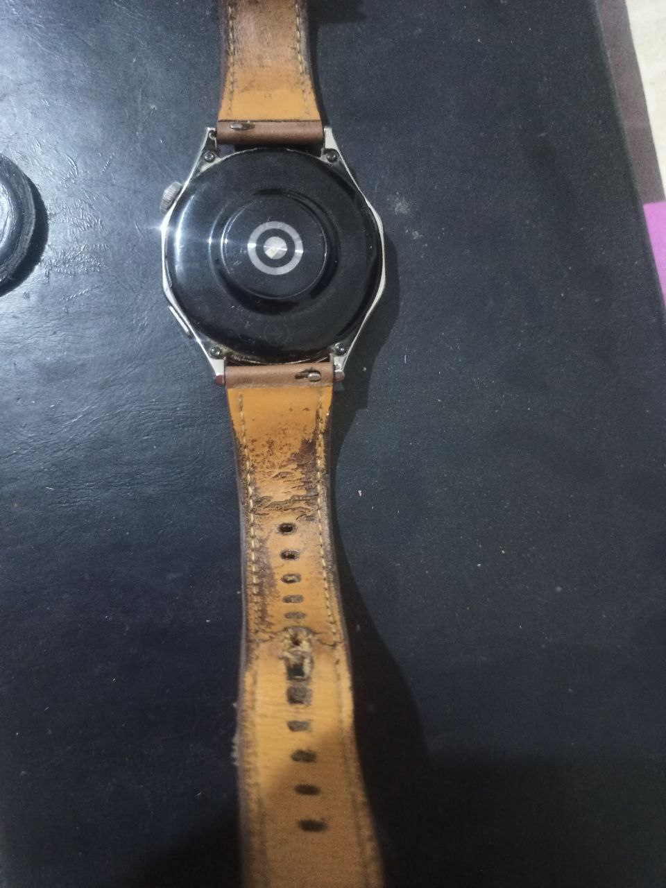
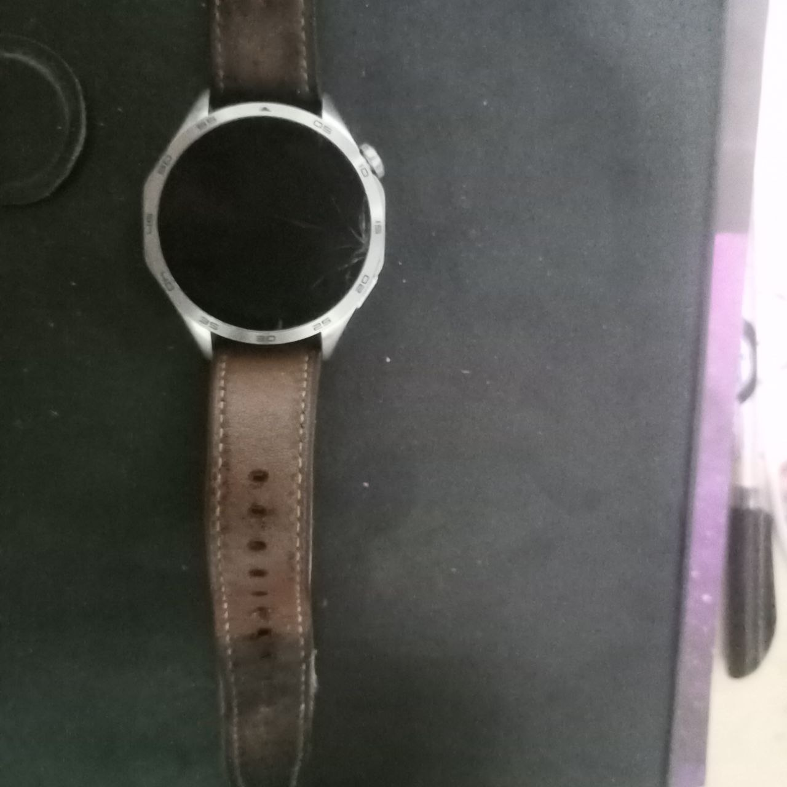
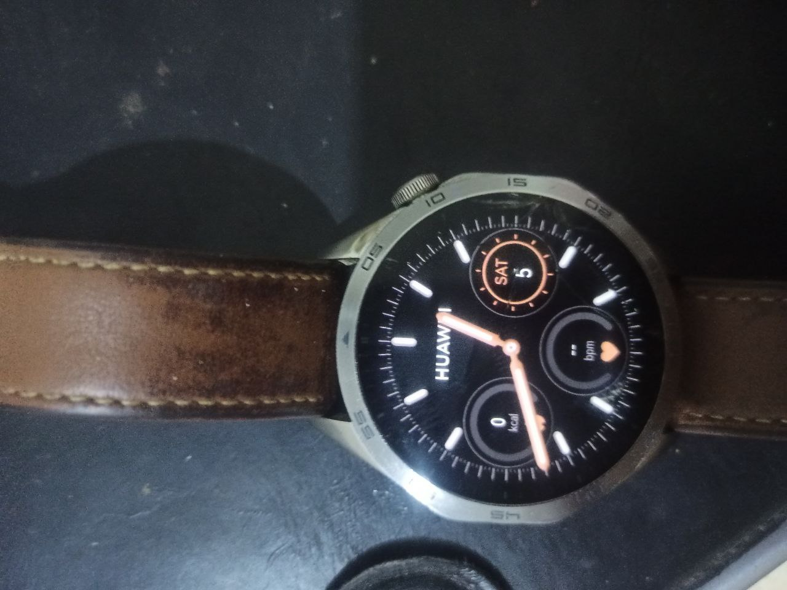
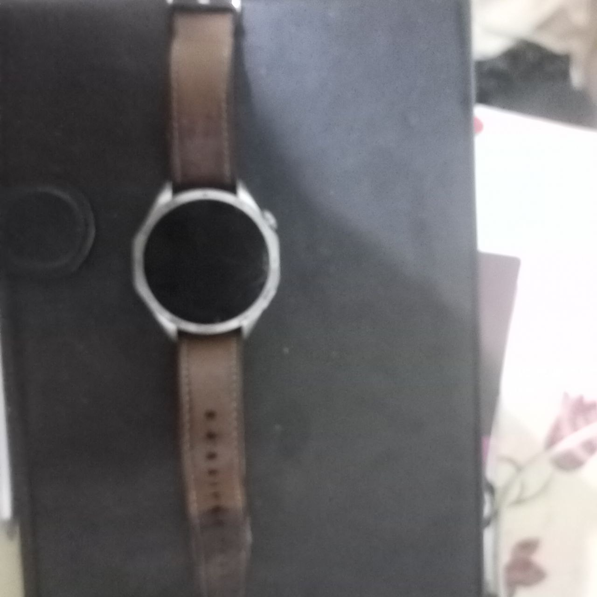

Review of Huawei watch gt 4
huawei
watch
exp
blogging
publish
Huawei watch gt4 review after 1 year of use focus more on cons and leaving pros to the media
Buying the Huawei GT4
- I bought it from Amazon for 13,000 EGP. I opened it immediately, and it looked so nice; I was very happy with its design and feel.
- I charged it with the wireless stand.
- I wore it after an hour and took some time to download the Huawei Health app on my Realme6 mobile.
Feeling pain
- I wore it, and after three days, my hand started to hurt, causing some discomfort because I was sleeping with it on without removing it.
- I wore it on my right hand for four days, then switched it to my left hand, and my body felt more comfortable with it.
The Design of the Huawei watch gt4
- The design is attractive, and many people who saw me wearing it didn’t notice that it was a smartwatch—they thought it was a classic watch.
- Others said that it looks better than the repetitive and dull design of the Apple Watch.
- It looks very premium.
- The brightness in sunlight is impressive.
Sleeping with Huawei watch gt4
- The accuracy of the sleep detector is almost perfect. Sometimes, when you leave the watch near you for 6 hours, it detects that you are sleeping, but this has only happened maybe three times this year.
- The accuracy of detecting sleep cycles and the time for each is spot on, and the graph analysis and statistics on this watch are easy to understand, creative, and full of information.
- Why can’t I set an alarm based on the sleep cycle, like in the Sleep Cycle app? This feature would be a game-changer!
Calories calculations with huawei health
- You enter your information, like weight and height, and based on your vitals and activity, it detects the calories you burn every second. I like this estimation feature.
- You can set a goal, for example, to go from 92 kg to 85 kg, but the problem is you need to calculate the calories and record it using the phone, not the watch. This is slow and inconvenient—I don’t like having to open my phone often. Most of the time, my meals are repetitive, and recording them on the Huawei Health app is boring, so I usually just do a quick add.
- In the future, I hope they let us add a list of meals to the app so we can select them directly from the watch.
Activities with Huawei Watch gt4
- Heart rate tracking is a little slow compared to real-time detection, and sometimes when you are running and want to check your speed and heart rate, it takes around 3 seconds—quite a long time if you’re in the middle of a run!
- The auto-detection of activities may only start after 20 minutes of walking!
- SpO2… and then what?
- They claim there are more than 100 exercises to choose from, but do I really use all of these 100?
- Let’s look at the ones that are useful to me:
- Outdoor run
- Elliptical
- Jump rope: My favorite! It’s accurate and very helpful.
- Indoor run
- Indoor walk
- Ones I don’t use:
- Outdoor cycling
- Indoor cycling
- Pool swimming
- Open-water swimming
- Mountain hiking
- Hiking
- Trail running
- Skiing
- Snowboarding
- Cross-country skiing
- Triathlon
- Rowing
- Track running
- Are these really 100 exercises?
- Where are the gym exercises like pull-ups, push-ups, squats, bench presses, etc.?
Syncing with huawei health
- You must use one main device. I have both a Huawei Health and a Huawei MatePad, but I have to log in on just one of them to sync the information. What if I want to use both? You can’t.
- Syncing with Linux or from the web? No, you can’t do that either.
- However, syncing is very fast.
Messages with huawei gt4
- I love the messaging feature. You can read messages in multiple languages without any problem and respond using preconfigured answers, but you can’t type on the watch.
Music with huawei gt4
- The music quality and sound are great, especially if you want to listen to tracks before sleeping.
Calls with huawei gt4
- Answering calls from the watch is really nice if you’re at home, but not so much if you’re outside on the street, for example.
Battery with huawei gt4
- The best thing about the watch is the battery life. I don’t worry about it at all. I charge it for 30 minutes per week, and even when I use the always-on display, the battery doesn’t drain much.
Apps with huawei gt4
- Camera Opus
- didn’t use it
- Photex
- didn’t use it
- Navigation - G maps
- didn’t use it
- OneCalc
- didn’t use it
- For Spotify Controller
- didn’t use it
- Calculator New
- used it multiple times
- Events - G Calender
- I use it alot
- Surfing Joe
- didn’t use it
- Mobcards
- didn’t use it
- eSound music
- didn’t use it
- petal maps
- use it when walking and running
- navigation watch
- didn’t use it
- easyCalenderGT
- didn’t use it
- myTuner Radio
- didn’t use it
- KeepStrong
- The app has problem with login with google it’s focused more for Chinese people
- Compass navgation
- didn’t use it
- TickTick
- very useful can do/undo tasks from the watch but only tasks not the habbits
- Radarbot
- didn’t use it
- Fragola
- didn’t use it
- Salaat first
- using it on daily basis
- home workout
- not very useful
- 2028 lite
- didn’t use it
- wordpuz
- didn’t use it
- love test
- didn’t use it
- focus to-do
- it’s not synced with cloud or the mobile app
- Dice
- didn’t use it
- Fitify workouts
- didn’t use it
- RTL
- didn’t use it
- hue essentials
- didn’t use it
- FotMob
- didn’t use it
- Calories Counter
- didn’t use it
- FilGoal
- didn’t use it
- S7 Airlines
- didn’t use it
- هسبريس
- didn’t use it
- Gold GPS Rangefinder
- didn’t use it
I broked the glass of the huawei gt4
- The watch broke on the first day of college, probably because I pressed my hand too hard on a marble surface or something similar at the university.
- I immediately contacted customer service, and a representative answered—I can’t remember her name—but she was incredibly polite, understanding, and helpful. I spoke to her again shortly after, and she asked me for specific information about the watch to check if it was under warranty or not. She followed up with me two days later, then again a day after that, and again two days later until I managed to get the invoice from Amazon. She tried to solve the issue by recommending an exchange and even told me which day to go when there would be discounts on the products.
- Honestly, it was the best customer service experience I’ve ever had. She was able to go beyond being just a robot to become someone who understands, values, and helps—a human experience that brings joy.
- At the very least, I had to document and acknowledge that she is someone exceptional. I requested to give her a rating, and I did. I’m really happy about that.
- But I haven’t fixed the watch yet because there are no spare parts available in Egypt.
   